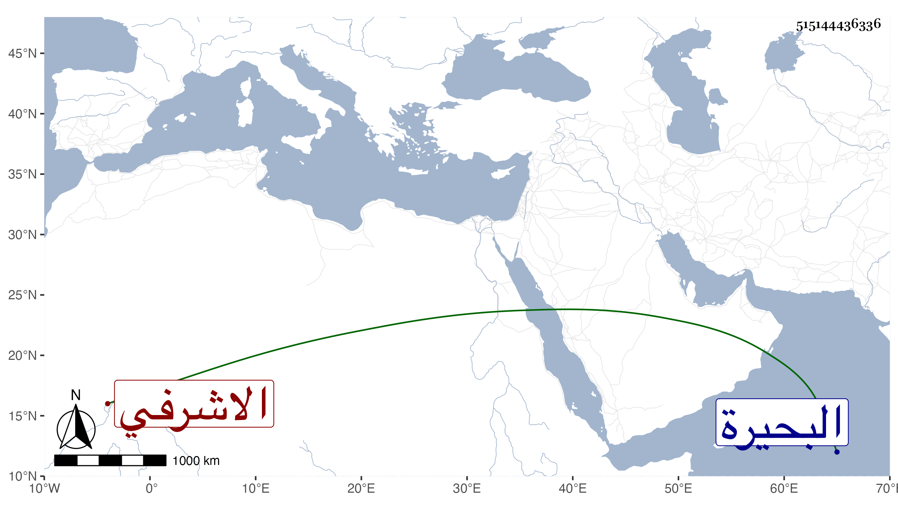

0902Sakhawi.DawLamic.ITO20230111-ara1.EIS1600.515144436336
Biography ID: 515144436336
172
تنبك الاشرفي برسباي ويعرف بالصغير ، كان في دولة أستاذه خاصكيا ثم في أيام ولده دوادارا ثم نكب بعده وأخرج إلى البلاد الشامية ثم تأمر عشرة في أيام الأشرف اينال وصار من رؤوس النوب إلى أن ندبه الظاهر خشقدم مع المجردين إلى البحيرة فقتل هناك بيد عرب الطاعة في ذي القعدة سنة ست وستين وقد زاد على الخمسين ، وكان عاقلا هينا لينا فصيح العبارة جيد التلاوة مليح الصوت متواضعا حشما رحمه الله .
